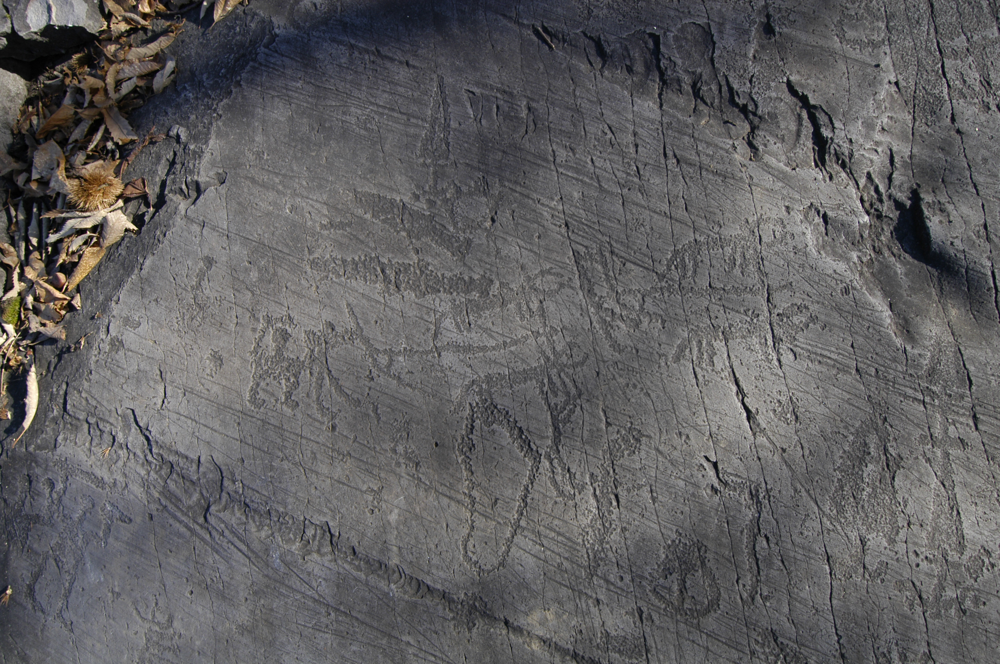

Ridimensionamento e taglio dell'Immagine

Fai click sul pulsante Apri per poter scegliere un'immagine su cui operare
Usa lo SCROLL del mouse per ingrandire o rimpicciolire l'immagine... oppure:
...trascina gli "angoli" dell'immagine per ridimensionarla
Suggerimento: tieni premuto SHIFT mentre ridimensioni l'immagine per mantenere le proporzioni originali
Posiziona, tramite trascinamento, la porzione di immagine di tuo interesse all'interno del riquadro verde. Poi fai click sul pulsante Taglia